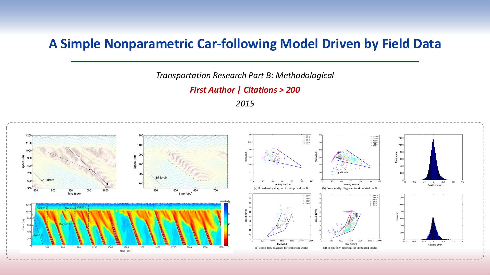
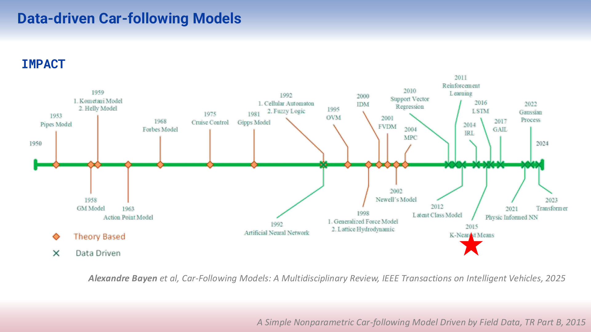
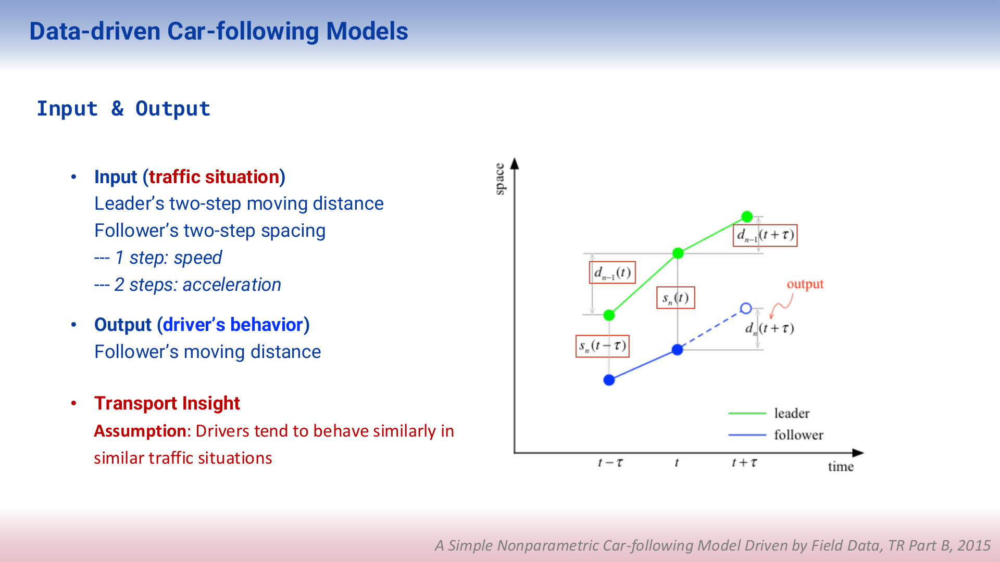
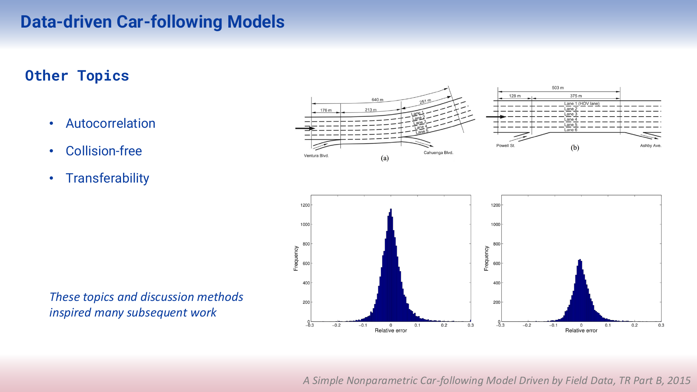
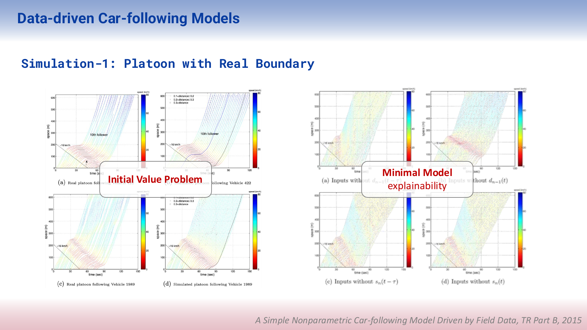
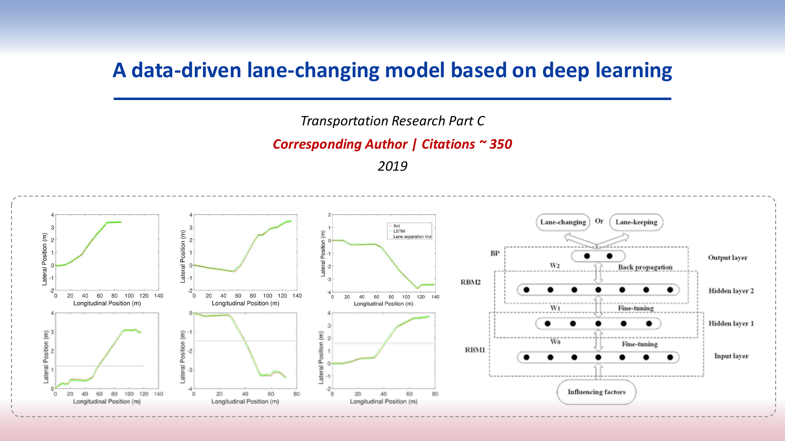

AI-Driven Traffic Flow Modeling
Overview
Vehicle motion include car-following and lane-changing. The corresponding models are cornerstones for understanding driver behavior, traffic dynamics, and supporting autonomous driving.
As early as 2014, at the dawn of the deep learning era, my team proposed an innovative kNN-based data-driven car-following model. This model has been cited more than 200 times, and it is widely recognized as one of the first AI-driven car-following models by review articles published by scholars from institutions such as the University of California, Berkeley (Zhang et al., 2025), the University of Washington (Chen et al., 2023), Imperial College London (Rowam et al., 2025), Tshinghua Univeristy (Xie et al., 2026)
In 2019, my team developed the first deep-learning-based lane-changing model using DBN and LSTM neural networks, which has since been cited over 300 times and is widely recognized in subsequent research (Siebke et al., 2023; Han et al., 2024; Wang et al., 2024; Huang et al., 2025 ) as a pioneering contribution to AI-driven modeling of driver behavior and traffic dynamics.
Slides










